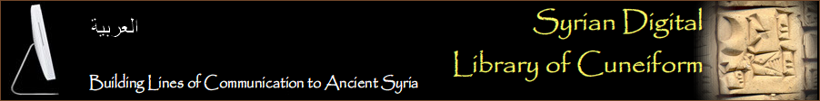

|

|
|
|
CUNEIFORM TABLETS COLLECTIONS IN SYRIAN MUSEUMS
| Archaeological Site |
Rough number of documents |
Museums |
| Djebel Aruda |
13 |
Aleppo |
| Hammam et-Turkman |
4 |
Raqqa |
| Habuba-Kabira |
|
Deir ez-Zor |
| Neirab |
12 |
Aleppo |
| Ras Ibn Hani |
100 |
Damascus |
| Ras Shamra / Ugarit |
1,800 |
Damascus, Aleppo, Lattaquia |
| Tell Ahmar / Til Barsip |
30 |
Aleppo |
| Tell al-Hamidiye / Ta'idum? |
|
Deir ez-Zor |
| Tell Ashara / Terqa |
550 |
Deir ez-Zor |
| Tell Barri / Kahat |
100 |
Deir ez-Zor |
| Tell Bazi / Baṣiru |
2 |
Aleppo |
| Tell Bderi |
40 |
Deir ez-Zor |
| Tell Beydar / Nabada * |
220 |
Deir ez-Zor |
| Tell Bi'a / Tuttul * |
300 |
Raqqa |
| Tell Brak / Nagar |
100 |
Aleppo, Deir ez-Zor |
| Tell Chagar Bazar / Ašnakkum |
310 |
Aleppo, Deir ez-Zor |
| Tell Cheikh Hamad / Dur Katlimmu |
500 |
Deir ez-Zor |
| Tell Chioukh Faouqani / Burmarina |
150 |
Aleppo |
| Tell Chuera / Harbu |
80 |
Raqqa |
| Tell Fekheriye |
|
Aleppo |
| Tell Fray / Hakkulân? |
7 |
Aleppo |
| Tell Hadidi / Azu |
15 |
Aleppo |
| Tell Hariri / Mari (old excavations) |
13,000 |
Aleppo, Damascus, Deir ez-Zor |
| Tell Hariri / Mari (excav. since 1998) |
3,000 |
Damascus |
| Tell Kazel / Sumur |
2 |
Tartous |
| Tell Leilan / Šehna—Šubat-Enlil |
700 |
Deir ez-Zor |
| Tell Mardikh / Ebla |
8,000 |
Idlib, Aleppo, Deir ez-Zor |
| Tell Masaikh |
|
Deir ez-Zor |
| Tell Meskéné / Emar |
640 |
Aleppo |
| Tell Mishrifé / Qatna |
100 |
Homs, Damascus |
| Tell Mozan / Urkeš |
|
Deir ez-Zor |
| Tell Munbaqa / Ekalte |
60 |
Raqqa |
| Tell el-Qitar / Til Abnu |
3 |
Aleppo |
| Tell Sabi Abyad |
300 |
Raqqa, Damascus |
| Tell Sakka |
1 |
Damascus |
| Tell Siyanu |
2 |
Damascus |
| Tell Taban / Tabatum |
500 |
Damascus |
| Umm el-Marra / Ṭuba(n)? |
1 |
Aleppo |
| Umma and Drehem (Sumer, Ur III) * |
730 |
Aleppo |
|
|
|
| TOTAL |
± 30,000 |
* Texts completely available in the SDLC website
|
English
Français
تاريخ سورية القديم
تارريخ التنقيب قي سورية
النصوص المسمارية المنشورة
حول
SDLC
|